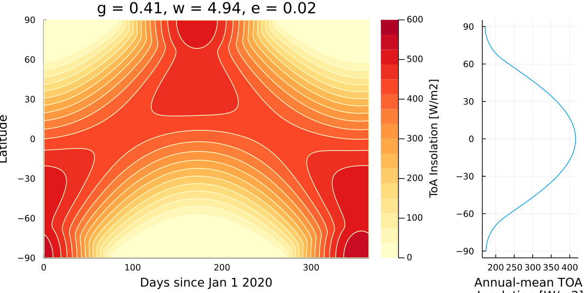
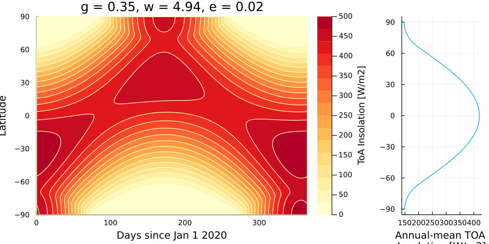
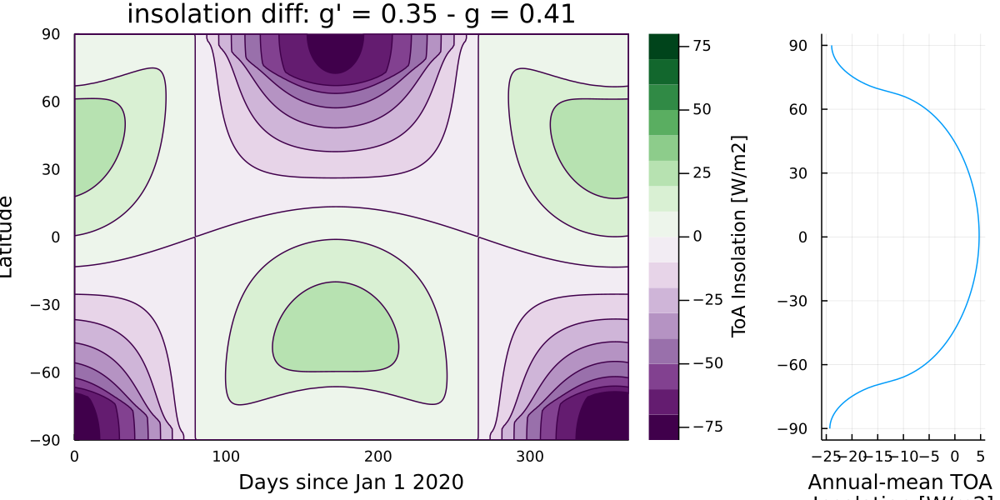
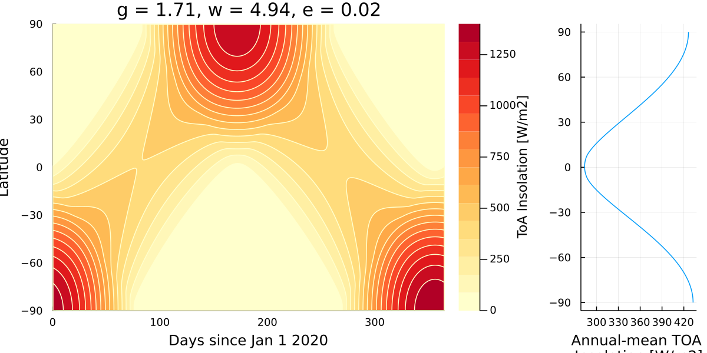
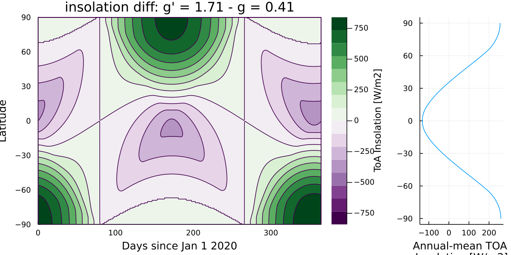

Insolation Examples
These examples are based on a homework assignment from the ESE 101 class at Caltech
Insolation in J2000
using CLIMAParameters
using CLIMAParameters.Planet
struct EarthParameterSet <: AbstractEarthParameterSet end
const param_set = EarthParameterSet()
include("plot_insolation.jl")
γ0 = obliq_epoch(param_set)
ϖ0 = lon_perihelion_epoch(param_set)
e0 = eccentricity_epoch(param_set)
days, lats, F0 = calc_day_lat_insolation(365, 180, param_set)
plot_day_lat_insolation(days, lats, F0, "YlOrRd", title, "insol_example1.png")
Insolation with smaller obliquity
# decrease γ to 20.0°
CLIMAParameters.Planet.obliq_epoch(::EarthParameterSet) = deg2rad(20.0)
γ1 = obliq_epoch(param_set)
days, lats, F2 = calc_day_lat_insolation(365, 180, param_set)
plot_day_lat_insolation(days,lats,F2,"YlOrRd", title, "insol_example2a.png")
plot_day_lat_insolation(days, lats, F2-F0, "PRGn", title, "insol_example2b.png") 
Insolation with very large obliquity (like Uranus)
# now change obliquity to 97.86°
CLIMAParameters.Planet.obliq_epoch(::EarthParameterSet) = deg2rad(97.86)
γ4 = obliq_epoch(param_set)
days, lats, F5 = calc_day_lat_insolation(365, 180, param_set)
plot_day_lat_insolation(days,lats,F5,"YlOrRd", title, "insol_example3a.png")
plot_day_lat_insolation(days, lats, F5-F0, "PRGn", title, "insol_example3b.png") 